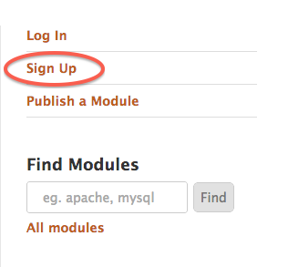
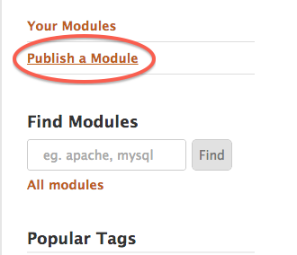
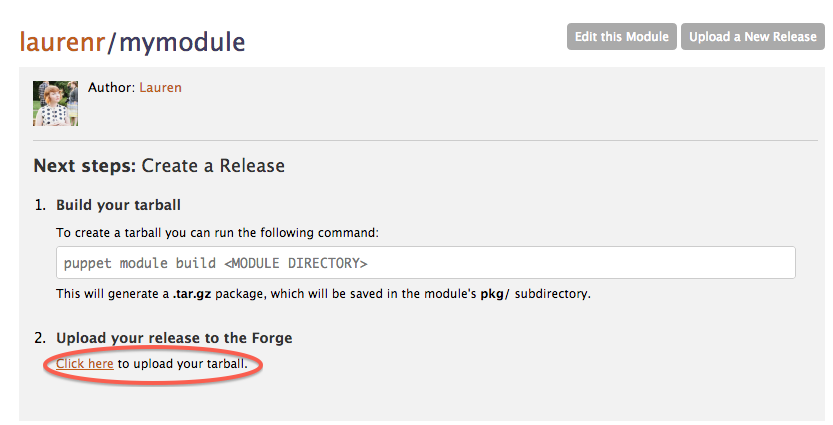
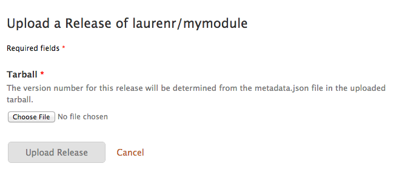
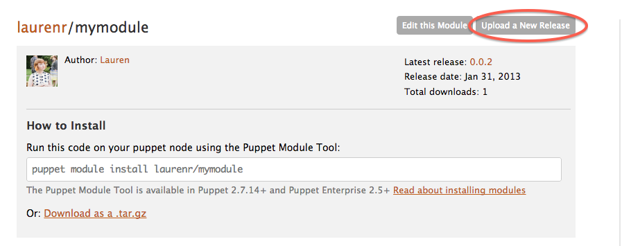

Publishing Modules on the Puppet Forge
Publishing Modules on the Puppet Forge
The Puppet Forge is a repository of modules, written and contributed by users. This document describes how to publish your own modules to the Puppet Forge so that other users can install them.
- Continue reading to learn how to publish your modules to the Puppet Forge.
- See “Module Fundamentals” for how to write and use your own Puppet modules.
- See “Installing Modules” for how to install pre-built modules from the Puppet Forge.
- See “Using Plugins” for how to arrange plugins (like custom facts and custom resource types) in modules and sync them to agent nodes.
- See “Documenting Modules” for a README template and information on providing directions for your module.
Overview
This guide assumes that you have already written a useful Puppet module. To publish your module, you will need to:
- Create a Puppet Forge account, if you don’t already have one
- Prepare your module
- Write a Modulefile with the required metadata
- Build an uploadable tarball of your module
- Upload your module using the Puppet Forge’s web interface.
A Note on Module Names
Because many users have published their own versions of modules with common names (“mysql,” “bacula,” etc.), the Puppet Forge requires module names to have a username prefix. That is, if a user named “puppetlabs” maintained a “mysql” module, it would be known to the Puppet Forge as
puppetlabs-mysql.Be sure to use this long name in your module’s Modulefile. However, you do not have to rename the module’s directory, and can leave the module in your active modulepath — the build action will do the right thing as long as the Modulefile is correct.
Another Note on Module Names
Although the Puppet Forge expects to receive modules named
username-module, its web interface presents them asusername/module. There isn’t a good reason for this, and we are working on reconciling the two; in the meantime, be sure to always use theusername-modulestyle in your metadata files and when issuing commands.
Create a Puppet Forge Account
Before you begin, you should create a user account on the Puppet Forge. You will need to know your username when preparing to publish any of your modules.
Start by navigating to the Puppet Forge website and clicking the “Sign Up” link in the sidebar:

Fill in your details. After you finish, you will be asked to verify your email address via a verification email. Once you have done so, you can publish modules to the Puppet Forge.
Prepare the Module
If you already have a Puppet module with the correct directory layout, you may continue to the next step.
Alternately, you can use the puppet module generate action to generate a template layout. This is mostly useful if you need an example Modulefile and README, and also includes a copy of the spec_helper tool for writing rspec-puppet tests. If you choose to do this, you will need to manually copy your module’s files into the template.
To generate a template, run puppet module generate <USERNAME>-<MODULE NAME>. For example:
# puppet module generate examplecorp-mymodule
Generating module at /Users/fred/Development/examplecorp-mymodule
examplecorp-mymodule
examplecorp-mymodule/tests
examplecorp-mymodule/tests/init.pp
examplecorp-mymodule/spec
examplecorp-mymodule/spec/spec_helper.rb
examplecorp-mymodule/README
examplecorp-mymodule/Modulefile
examplecorp-mymodule/manifests
examplecorp-mymodule/manifests/init.pp
Note: This action is of limited use when developing a module from scratch, as the module must be renamed to remove the username prefix before it can be used with Puppet.
Write a Modulefile
In your module’s main directory, create a text file named Modulefile. If you generated a template, you’ll already have an example Modulefile.
The Modulefile resembles a configuration or data file, but is actually a simple Ruby domain-specific language (DSL), which is executed when you build a tarball of the module. This means Ruby’s normal rules of string quoting apply:
name 'examplecorp-mymodule'
version '0.0.1'
dependency 'puppetlabs/mysql', '1.2.3'
description "This is a full description
of the module, and is being written as a multi-line string."
Modulefiles support the following pieces of metadata:
name— REQUIRED. The full name of the module, including the username (e.g. “username-module” — see note above).version— REQUIRED. The current version of the module. This should be a semantic version.summary— REQUIRED. A one-line description of the module.description— REQUIRED. A more complete description of the module.dependency— A module that this module depends on. Unlike the other fields, thedependencymethod accepts up to three comma-separated arguments: a module name (with a slash between the user and name, not a hyphen), a version requirement, and a repository. A Modulefile may include multipledependencylines. See “Dependencies in the Modulefile” below for more details.project_page— The module’s website.license— The license under which the module is made available.author— The module’s author. If not provided, this field will default to the username portion of the module’snamefield.source— The module’s source. This field’s purpose is not specified.
Dependencies in the Modulefile
If you choose to rely on another Forge module, you can express this in the “dependency” field of your Modulefile:
dependency 'puppetlabs/stdlib', '>= 2.2.1'
Warning: The full name in a dependency must use a slash between the username and module name. This is different from the name format used elsewhere in the Modulefile. This is a legacy architecture problem with the Puppet Forge, and we apologize for the inconvenience. Our eventual plan is to allow full names with hyphens everywhere while continuing to allow names with slashes, then (eventually, much later) phase out names with slashes.
A Modulefile may have several dependency fields.
The version requirement in a dependency isn’t limited to a single version; you can use several operators for version comparisons. The following operators are available:
1.2.3— A specific version.>1.2.3— Greater than a specific version.<1.2.3— Less than a specific version.>=1.2.3— Greater than or equal to a specific version.<=1.2.3— Less than or equal to a specific version.>=1.0.0 <2.0.0— Range of versions; both conditions must be satisfied. (This example would match 1.0.1 but not 2.0.1)1.x— A semantic major version. (This example would match 1.0.1 but not 2.0.1, and is shorthand for>=1.0.0 <2.0.0.)1.2.x— A semantic major & minor version. (This example would match 1.2.3 but not 1.3.0, and is shorthand for>=1.2.0 <1.3.0.)
A Note on Semantic Versioning
When writing your Modulefile, you’re setting a version for your own module and optionally expressing dependancies on others’ module versions. We strongly recommend following the Semantic Versioning specification. Doing so allows others to rely on your modules without unexpected change.
Many other users already use semantic versioning, and you can take advantage of this in your modules’ dependencies. For example, if you depend on puppetlabs/stdlib and want to allow updates while avoiding breaking changes, you could write the following line in your Modulefile (assuming a current stdlib version of 2.2.1):
dependency 'puppetlabs/stdlib', '2.x'
Build Your Module
Now that the content and Modulefile are ready, you can build a package of your module by running the following command:
puppet module build <MODULE DIRECTORY>
This will generate a .tar.gz package, which will be saved in the module’s pkg/ subdirectory.
For example:
# puppet module build /etc/puppetlabs/puppet/modules/mymodule
Building /etc/puppetlabs/puppet/modules/mymodule for release
/etc/puppetlabs/puppet/modules/mymodule/pkg/examplecorp-mymodule-0.0.1.tar.gz
Upload to the Puppet Forge
Now that you have a compiled tar.gz package, you can upload it to the Puppet Forge. There is currently no command line tool for publishing; you must use the Puppet Forge’s web interface.
In your web browser, navigate to the Puppet Forge; log in if necessary.
Create a Module Page
If you have never published this module before, you must create a new page for it. Click on the “Publish a Module” link in the sidebar:

This will bring up a form for info about the new module. Only the “Module Name” field is required. Use the module’s short name, not the long username-module name.
Clicking the “Publish Module” button at the bottom of the form will automatically navigate to the new module page.
Create a Release
Navigate to the module’s page if you are not already there, and click the “Click here to upload your tarball” link:

This will bring you to the upload form:

Click “Choose File” and use the file browser to locate and select the release tarball you created with the puppet module build action. Then click the “Upload Release” link.
Your module has now been published to the Puppet Forge. The Forge will pull your README, Changelog, and License files from your tarball to display on your module’s page. To confirm that it was published correctly, you can install it on a new system using the puppet module install action.
Release a New Version
To release a new version of an already published module, you will need to make any necessary edits to your module, and then increment the version field in the Modulefile (ensuring you use a valid semantic version).
When you are ready to publish your new version, navigate to the Puppet Forge and log in if necessary. Click the “Upload a New Release” link:

This will bring you to the upload form as mentioned in Create a Release above, where you can select the new release tarball and upload the release.